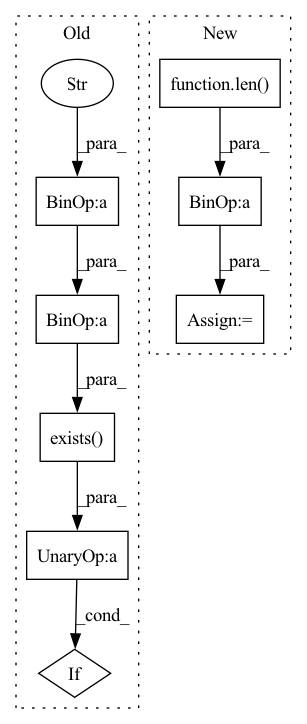

Pattern ID :13712
Before Change
with open(Path(image_folder + "/" + id + ".jpg"), "wb") as file:
foo.save(file, optimize=True, quality=85)
except Exception:
if not os.path.exists(skip_folder+"/"+subdir) :
try:
os.makedirs(skip_folder+"/"+subdir)
except:After Change
def load_image(x):
name, url, image_folder, skip_folder = x
fid = str(int(int(name) / 10000 ))
subdir = "0"* (5-len( fid) ) + fid
os.makedirs(Path(image_folder+"/"+subdir), exist_ok=True)
id = subdir + "/" + "0"*(9-len(str(name))) + str(name)
try:In pattern: SUPERPATTERN
Frequency: 3
Non-data size: 8
Instances Fragment ID: 45828059
Project Name: robvanvolt/dalle-datasets
Commit Name: eb8aefe623f98f92b95c57d401a8f8d264d51e78
Time: 2021-09-22
Author: robvanvolt@gmail.com
File Name: general/cc12m.py
M Class Name: AnonimousClass
N Class Name: AnonimousClass
M Method Name: load_image(1)
N Method Name: load_image(1)
M Parent Class:
N Parent Class:
M File Name: general/cc12m.py
N File Name: general/cc12m.py
M Start Line: 67
M End Line: 88
N Start Line: 42
N End Line: 56
Before Change
def load_caption(x):
name, caption = x
subdir = str(int(int(name) / 10000 ))
if not os.path.exists(text_folder+"/"+subdir) :
try:
os.makedirs(text_folder+"/"+subdir)
except:After Change
def load_caption(x):
name, caption, text_folder = x
fid = str(int(int(name) / 10000 ))
subdir = "0"* (5-len( fid) ) + fid
os.makedirs(Path(text_folder+"/"+subdir), exist_ok=True)
fp = text_folder + "/" + subdir + "/" + "0"*(9-len(str(name))) + str(name) + ".txt"
with open(fp, "w") as f: Fragment ID: 45828043
Project Name: robvanvolt/dalle-datasets
Commit Name: eb8aefe623f98f92b95c57d401a8f8d264d51e78
Time: 2021-09-22
Author: robvanvolt@gmail.com
File Name: general/cc12m.py
M Class Name: AnonimousClass
N Class Name: AnonimousClass
M Method Name: load_caption(1)
N Method Name: load_caption(1)
M Parent Class:
N Parent Class:
M File Name: general/cc12m.py
N File Name: general/cc12m.py
M Start Line: 38
M End Line: 45
N Start Line: 20
N End Line: 25
Before Change
)
max_h = self.img_size[0]
max_w = self.img_size[1]
cache_file = self.data_dir + "/img_cache_" + self.name + "_" + str(self.img_size[0]) + ".array"
if not os.path.exists(cache_file) :
print(
"Caching images for the first time."
)After Change
"This requires large system RAM. For COCO need 200G+ RAM space.\n"
"********************************************************************************\n"
)
self.imgs = [None] * len( self.annotations)
from tqdm import tqdm
from multiprocessing.pool import ThreadPool
gb = 0
NUM_THREADs = min(8, os.cpu_count())
loaded_images = ThreadPool(NUM_THREADs).imap(
lambda x: self.load_resized_img(x),
range(len(self.annotations)),
)
pbar = tqdm(enumerate(loaded_images), total=len(self.annotations))
for k, out in pbar:
self.imgs[k] = out.copy()
gb += self.imgs[k].nbytes
pbar.desc = f"Caching images ({gb / 1E9:.1f}GB)"
pbar.close()
Fragment ID: 45828057
Project Name: iywie/pl_yolo
Commit Name: 2f4778253f7caf2cad05241c59bae5bb00b65422
Time: 2022-03-06
Author: zhouyw96@outlook.com
File Name: models/data/datasets/cocoDataset.py
M Class Name: COCODataset
N Class Name: COCODataset
M Method Name: _cache_images(1)
N Method Name: _cache_images(1)
M Parent Class: Dataset
N Parent Class: Dataset
M File Name: models/data/datasets/cocoDataset.py
N File Name: models/data/datasets/cocoDataset.py
M Start Line: 139
M End Line: 177
N Start Line: 139
N End Line: 153